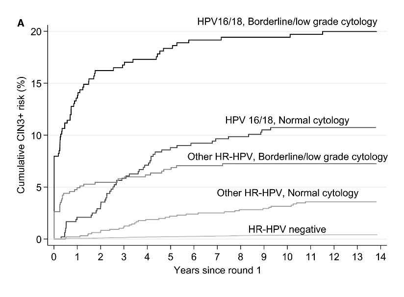

Validez diagnóstica de las estrategias de triaje en mujeres VPH positivas combinando varias pruebas de triaje
La mayoría de los estudios exploraron estrategias de triaje que englobaban más de una prueba. Las opciones aquí presentadas incluyen el uso de la citología combinado con tinción dual, el genotipado del VPH 16/18 con tinción dual o la citología con genotipado del VPH 16/18, siendo esta última la más explorada.
Citología con genotipado del VPH 16/18
Actualmente, en algunos países europeos (España, Suecia, Holanda e Italia), se utiliza una estrategia combinada en la que las mujeres positivas por VPH 16/18 se derivan directamente a la colposcopia y aquellas que solo son positivas por otros tipos de VPH de alto riesgo realizan una citología y se derivan a colposcopia solo cuando la citología muestra ASC-US+.
Con esta estrategia, cerca de la mitad de las mujeres positivas al VPH son positivas en el triaje y, por lo tanto, se derivan a colposcopia. En el metaanálisis de Arbyn et al., esta estrategia mostró una sensibilidad del 83% y del 86% para CIN2+ y CIN3+, respectivamente, mientras que la especificidad para < CIN2 fue del 55%.
En comparación con la citología réflex ASC-US+ como prueba única, la combinación de la citología ASC-US+ con el genotipado del VPH 16/18 (es decir, derivar adicionalmente a las mujeres positivas al VPH 16/18 con una citología normal) resultó más sensible para CIN2+ y CIN3+, aunque los valores de especificidad resultaron más bajos.
En un análisis de la cohorte del ensayo clínico aleatorizado ARTISTIC de más de 24.000 mujeres, reclutadas entre 2001 y 2003, que acudieron al cribado de cáncer de cuello uterino en Inglaterra, y con seguimiento de las mujeres con un resultado de CIN3. El estudio identifico a través del registro nacional de cáncer todos los casos de cáncer de cuello uterino hasta diciembre de 2015. El estudio evaluó el riesgo a largo plazo de CIN3+ asociado a la citología y a las estrategias de triaje del VPH 16/18 para las mujeres positivas al VPH[13].
Los riesgos acumulados a 10 años de CIN3+ para la citología o el VPH16/18 como única prueba de triaje fueron:
Para la citología: Mayores riesgos a medida que aumentaba la gravedad de la citología (5,7%, 12,1% y 54,9% para las mujeres con citología normal, de grado limítrofe/bajo y moderada/grave al inicio del estudio, respectivamente).
Para el genotipado de VPH16/18 frente a otros tipos de VPH de alto riesgo, los riesgos fueron mayores entre las mujeres que dieron positivo al VPH 16/18 (25,6% frente al 7,8% en las mujeres positivas al VPH 16/18 y a otros tipos de alto riesgo, respectivamente).
Para la combinación de genotipado de VPH16/18 y citología, los riesgos acumulados a 10 años de CIN3+ fueron (Figura 4):
El mayor riesgo se observó en las mujeres con infección por VPH 16/18 y en aquellas con citología moderada/grave (63,6%), seguidas de las que presentaban una citología moderada/grave con otras infecciones por VPH de alto riesgo (40,2%).
El riesgo fue mayor entre las mujeres positivas al VPH 16/18, independientemente de los resultados de la citología (19,4% y 10,7% entre las mujeres con resultados de citología de bajo grado y normales, respectivamente), en comparación con otras mujeres positivas a otros VPH de alto riesgo, independientemente de la citología (7,3% y 3,2% entre las mujeres con resultados de citología de bajo grado y normales, respectivamente).
FIGURA 4 Riesgo acumulado de CIN3+ en mujeres positivas al VPH con citología normal o de bajo grado, por tipo de VPH y por resultado de la citología
A partir de la estratificación de estos riesgos, este estudio sugiere que las lesiones de bajo grado pueden realizar seguimiento a corto plazo en lugar de ser derivadas inmediatamente a colposcopia para evaluar la necesidad de realizar estudio histologico. Los seguimientos a intervalos de 1 y 2 años están justificados en mujeres con citología normal positivas por VPH 16/18 u otros VPH de alto riesgo, respectivamente, y también podrían considerarse para las que tienen citologías limítrofes/de bajo grado.
No se dispone de datos sobre cómo funcionaría el triaje mediante la distinción del genotipo del VPH 16/18 en el caso de las lesiones glandulares precancerosas o de adenocarcinoma.